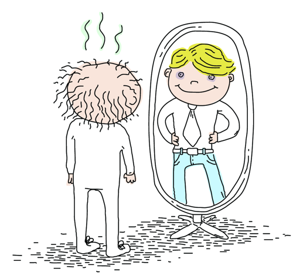

honest practice
Honest Practice: How the Public Sector Can Look at Itself (New article in Resources)

We provide here a detailed summary of the article “Honest Practice: How the Public Sector Can Look at Itself” by Howie Fisher with illustrations and design by Billy Brown. Download the full pdf from attachments.
Honest Practice: How the Public Sector Can Look at Itself
An article about the pitfalls of subscribing to so-called best practices. An alternative is offered in the form of Honest Practice: a narrative approach to evaluation that contests the copy-and-paste mentality that plagues our field.
Written by Howie Fisher with illustrations and design by Billy Brown
Making Best Practices Adequate
The Transmission Project has long made the argument that it is a lack of resources and capacity that prevent organizations from successfully adopting best practices, not ignorance of those practices. Our focus on honest practice recognizes the need to take a broader focus on an organization’s capacity and environmental context.
From Adapt and Adopt: An Experiment in Making Best Practices Adequate in an Organization [PDF], by Nelly Burrin, Gil Regev and Alain Wegmann:
Revisiting Honest Practice
Looking back through my writings about honest practice, I came across this piece originally published in the
“You can’t copy your way to the top.”
This “meta lesson” from The Contrarian’s Guide to Leadership struck me when advising a colleague on a grant that wanted applicants to document the use of “best practices” in their proposed project. The real kick was that the funder was only interested in new projects and proclaimed to support innovation.
More on learning from mistakes
No one is immune to making mistakes.
And I have to express admiration to those who will admit it, learn from it, and make the changes necessary to respond to it.
But to make mistakes and changes at such a high level and talk about it, well, that’s like superhero stuff to me.
Take this week’s announcement from the White House:
Honesty is such a lonely word
At the Transmission Project, you hear us talking about the concept of honest practice rather than best practice. We believe it is equally, if not more, instrcuctive to examine more than what worked. We want to know about surprises, the unexpected, even the failures.
I perked up when, in my RSS reader, I spotted this in a recent post at Museum 2.0:
What’s the best way to share information about your experiments–what worked and what didn’t? Publish.